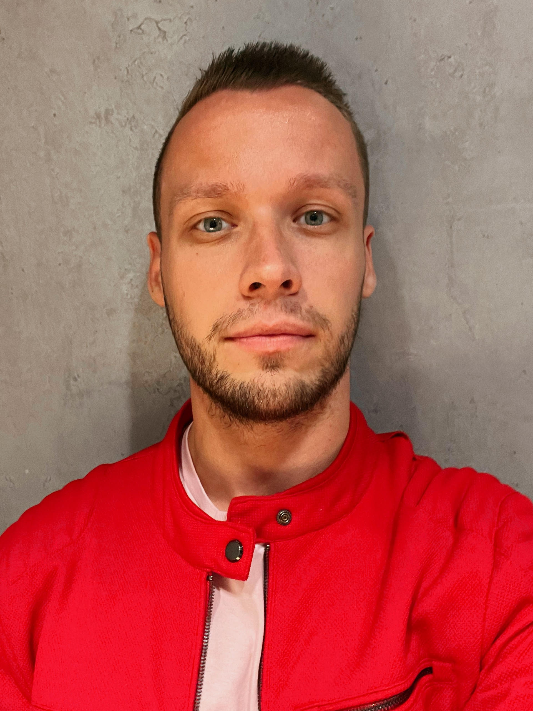

Hello, world! Pleased to meet you and to show you my past, present and possibly also the future. So, who am I?
Operations specialist
Currently in phase of exploring my future and career. Detailist, enthusiast and creative mind.
2013-2018
International relations and diplomacy
2014-2018
Head of B2C and branch manager
Quality Unit, s. r. o. | SaaS industry
August 2021 - present
Experienced head of operations in HR, finance & legal management. I have a proven expertise in establishing HR processes, tise in establishing HR processes,
implementing, KPI and MoS systems, developing interview flow process, enhancing, internal communication and organizing online & offline events of various sizes.
Adept in recruitment processes, overseeing job, promotion, interviews, and onboarding. Managed legal compliance, completely devised an ESG strategy, established
and updated several internal policies to meet regulatory and customer needs. Proficient in finance and inventory management, handling cash flow, invoicing,
and dispute resolution. Passion for driving organizational processes and collaborating with cross-functional teams to achieve common goals.
Quality Unit, s. r. o. | SaaS industry
March 2020 - present
Localization & translation manager with over 3 years of experience in process optimization, content management, and team leadership. Established and optimized
website & app localization processes, managed a team of 100+ remote translators through the UpWork platform, and completely facilitated the translation of 2 websites
into 20+ languages, resulting in expanded market reach and penetration. Implemented efficient hiring processes, onboarding procedures, and quality assurance protocols,
ensuring high-quality output. Currently overseeing a scaled-down team of 15+ translators.
Quality Unit, s. r. o. | SaaS industry
June 2018 - March 2020
I began my journey at Quality Unit as a marketing specialist with a focus on executing online marketing campaigns and content management. Led email marketing
initiatives and managed the company's online presence on review portals, including a successful migration to a new CMS platform. Demonstrated expertise in creating
email campaigns, nurturing and sales initiatives, and managing the company's presence on review marketplaces. Achieved the best year of review collection
with a 20% increase YOY. Gained proficiency in WordPress, including Gutenberg, Thrive Architect, and Elementor.
UEBA, Faculty of international relations | Studies
September 2017 - April 2018
Head of political section at Model conference 2018 and a moderator of panel discussion on the topic of "Social integration within the European Union".
AIESEC Bratislava | NGO
Febuary 2014 - January 2018
Engaged in various roles, including 7+ months in company relations, 2,5 years in B2C marketing, and 1 year as a branch manager. Organized several local conferences
and facilitated diverse training sessions.
Communication skills, open-minded approach, strong planning focus, passion for tasks, collaborative team spirit, attention to details, quick learning skills, adaptability.
Work should take only 1/3 of our life, therefore, I consider it as a necessity to introduce also some of hobbies & passions. If we share some things, let me know!
Nice to meet you, Internet stranger! If you would like to stay in touch, I highly recommend checking my contacts.